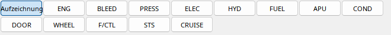
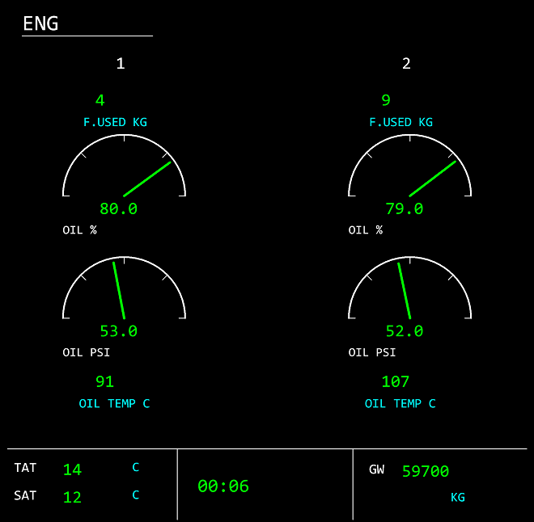

Die unteren Tasten wählen ENG, BLEED, PRESS, ELEC, HYD, FUEL, APU, COND, DOOR, WHEEL, F/CTL, STS und CRUISE. Die Auswahl steuert nur die Wiedergabe, nicht MSFS. Werte folgen weiterhin der gemeinsamen Zeit.
Recorded wählt die damals angezeigte Seite, sofern deren Kennung aufgezeichnet wurde. Ohne diese Variable bleibt die historische Seite unbekannt. Unterkapitel zeigen jede Seite einzeln.
Die Fußzeile enthält verfügbare TAT, SAT, Zeit und Gesamtmasse. Fehlende Addondaten bleiben Striche. Das ECAM lässt sich neben dem PFD abkoppeln.

